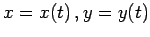
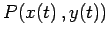
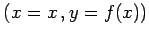
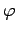
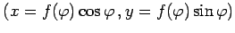
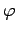
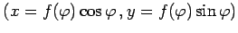
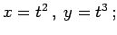
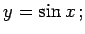
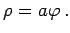

Inhalt Index DeskTop Bronstein

 Geometrie Differentialgeometrie Ebene Kurven Möglichkeiten, eine ebene Kurve zu definieren
Geometrie Differentialgeometrie Ebene Kurven Möglichkeiten, eine ebene Kurve zu definieren


Wenn eine Kurve in der Parameterform  (3.450) gegeben ist, dann wird auf ihr als positiv die Richtung definiert, in der sich ein Kurvenpunkt  für zunehmende Werte des Parameters t bewegt.
Ist die Kurve in der expliziten Form y =f(x) (3.449) gegeben, dann kann die Abszisse als Parameter aufgefaßt werden , so daß die positive Richtung die mit wachsender Abszisse ist. Für die Angabe in Polarkoordinaten  (3.451) dient der Winkel   als Parameter, so daß die positive Richtung der Zunahme von
(3.451) dient der Winkel   als Parameter, so daß die positive Richtung der Zunahme von  entspricht, d.h. entgegengesetzt zum Drehsinn des Uhrzeigers.
entspricht, d.h. entgegengesetzt zum Drehsinn des Uhrzeigers.
| Beispiel A |
|
 |
| Beispiel B |
|
 |
| Beispiel C |
|
 |